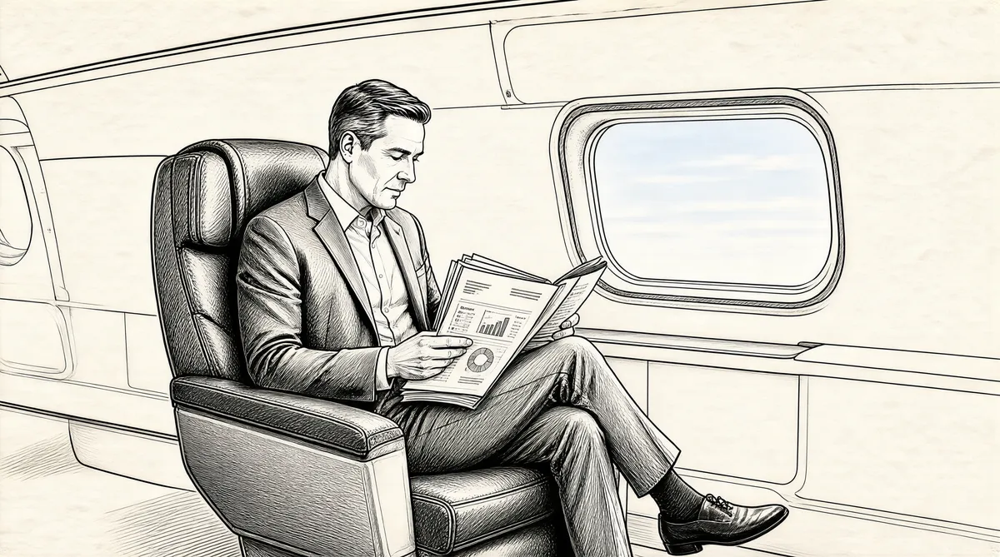

第26章 黄金堆

沃伦也许说过他想成为一个百万富翁，但他可从来没说过达到目标后会就此停止。后来他描述这段时期的自己是“在做我并不真正想做的事情”，他真正想做的是投资。现在，他的孩子们从5岁到10岁不等，一个朋友曾描述苏珊就像“一个单身母亲”。如果有要求，沃伦会在学校重要场合露面或者在橄榄球场边徘徊，但他从不会主动提出跟孩子们做游戏。他看起来太忙了，没有注意到孩子们对关注的渴望。苏珊教导孩子们必须尊重他的特殊使命，她告诉他们：“他只能做到这样了，不要再期望从他那儿得到更多。”这也适用于她。很明显，沃伦深深地爱着妻子，并且会在公开场合表现出来，深情地抚摸着她，并且重述着她温柔、有趣的种种往事，以及这样一个温文尔雅的天使是如何下嫁于他的，而他这个会弹夏威夷四弦琴的金融神童当时只是一个身心受到伤害的人。同时，他已经习惯于她的关注，可是依然不是那么擅长家务。有一次，苏珊觉得恶心想吐，就让他帮忙拿一个盆进来，可他拿来了一个滤锅；她指出有洞，他又到厨房里转来转去，最后在滤锅上加了一块烤板后得意扬扬地拿了回来。从那以后，她知道要让沃伦学会干家务活儿是没有任何希望的。
可是，沃伦习惯的可预测性，给一家人的生活提供了相当的稳定性。晚上，他重现了自己父亲以前那样有规律的生活，每天晚上在同样的时间回来，“砰”地关上车库的门，在去起居室看报纸之前会大喊一声，“我回来了！”他并不是漠不关心，通常他都有空。不过在谈话的时候，他说的话总有点儿经过精心准备，甚至是预先演习过的意味。他总是超前一步。他的话语充分表达了他脑子里的想法；它从沉默中爆发，是智慧的闪光，甚至是在某些特定主题的讨论中经过争论而得来的。他的感情隐藏在多重面纱的后面，以至于看起来他自己在大部分时间里也没有意识到。
这段时间苏珊也比较忙。和她父亲一样，她很忙，总是被人们包围着；她也避免一个人闲着。她是戏剧协会的副主席，并且参与了联合社区服务组织。她和一大群女性朋友一起购物、吃饭，与犹太人和黑人朋友在一起的时间远远超过了在白人社交圈的时间。
在一群热情支持人权的奥马哈妇女中，苏珊开始变得举足轻重。这时，结束就业以及公共设施领域的种族隔离，撤除在投票权上设置的障碍等斗争，在全美范围内正在加速。她帮助组织了美国人专题小组的奥马哈分部，这个团体派出一个犹太人、一个天主教徒、一个白人新教徒、一个黑人新教徒给人权组织、教堂以及其他组织讲他们自己的经历。专题小组是把人们团结起来的一种途径。苏珊的一个朋友讽刺地说，她在里面的角色是“为身为白种盎格鲁–撒克逊新教徒而道歉”。专题小组的成员回答人们类似这样的问题：“为什么黑人会想搬到镇子的另一处？你们中间有人对其他人存有偏见吗？犹太人会相信耶稣的存在吗？你不认为静坐会引起麻烦吗？”那时，在美国南部大多数地区，黑人还不能使用“仅供白人使用”的公共厕所，看到一个黑人女性和一个白人女性平等地在同一舞台上，会引起观众的轰动。1
下午，苏珊通常会带着苏茜，来回奔波于在城市北部举行的各种会议和委员会之间，试图去解决这个城市里最糟糕的问题：犹太人区毁坏的住房以及糟糕的生活条件。2警察制止了她好几次。“你来这儿干什么？”他们问。
“宝贝，”焦急不安的汤普森博士告诉苏茜，“你妈妈就要被杀了。”当苏茜和她妈妈一起去的时候，他让她带上一个警笛。“宝贝，你就要被绑架了。”他说。3
担当一个问题解决者以及情感清扫器的角色，意味着人们只要有麻烦，不管是什么样的麻烦，就会想着给苏珊打电话。她曾经说沃伦是她的“第一个病人”4，现在还有其他人。她要更多地管理她的姐姐多蒂的生活，因为后者处理问题的能力下降而酒却越喝越多。她还要做多丽丝的咨询顾问，帮助多丽丝渡过和杜鲁门离婚的难关，她还给了多丽丝一本维克多·弗兰克的《人类对意义的追寻》，多丽丝一遍又一遍地阅读，在痛苦中寻求希望。5她还帮助她的朋友苏·布朗利，把她赞助的一个埃塞俄比亚学生带到家里住了几天，因为布朗利的父亲就要来了，如果他看见一个“黑人女性睡在她的床上”，一定会吓坏的。6作为这个家庭的文化交流体验，苏珊曾经安排奥马哈大学的一个埃及交换生和他们一起住了一学期。7除了沃伦的书房，巴菲特的家再也不是一个可以躲开外界的避难所了，享受清静独处的机会也越来越少。尽管家里的气氛轻松自在，但在孩子们的成长过程中，自由和纪律——由他们的父母灌输的强烈的道德基本原则和对丰富体验的强调——是平衡的。沃伦和苏珊曾经多次长谈过，在一个富有的家庭如何抚养孩子，才能让他们可以自给自足，而不是认为理所当然地有资格享用父母给予的一切。
孩子们缺少的是关注，而他们的父亲几乎总是把心思都放在工作上，母亲就像一个种了太多西红柿的园丁，任何时候只要有需要，她就会提着水壶跑过去。孩子们对这种教育方式有不同的反应。大一点儿的苏茜，较少要求妈妈的注意，而且她在两个弟弟身上有更多的权威。她还会在家门外的繁忙道路上担任十字路口的卫士，也会和她的朋友待上一段时间。8
豪伊这个“龙卷风”，在后院里挖隧道，从扶栏上跳下去，吊在窗帘上，把房子几乎要拆烂了。每天都好像是愚人节，他曾经将一桶水从屋顶倒在了保姆菲丽丝的头上，每个人都知道喝他递过来的任何东西都是不安全的。但是他也很容易受伤，和他的母亲一样是个软心肠，他需要的关注让苏珊不堪重负。当苏珊达到极限时，有时会把豪伊锁在自己的房间里。9
天生安静的彼得觉得躲在后面很受用，而他的哥哥姐姐则在一旁争吵着统治权，专横的苏茜努力容忍着豪伊式的旋风。10一旦周围的气氛过于紧张，生性平和的彼得就会撤回到自己思考的世界。他不高兴的时候，就在钢琴上用低调弹奏《扬基歌》，而不是用语言表达自己的感受。11
沃伦赞成妻子的各种兴趣，为她的慷慨和在奥马哈的领导角色而自豪，他感激她对孩子们的关注，让他能够解放出来专注于自己的工作。他常常也会在单子上再加上一件事情，不过和她不一样，他从不会让自己承担过多的事务。当新的事务进来，他会让其他的出去。但是，有两个例外：钱和朋友。
正是由于这两点，到1963年，一些职业投资人已经搞清楚，奥马哈的这个叫巴菲特的家伙在干些什么，甚至一些从没有听说过沃伦·巴菲特这个名字的人也都开始搜寻他。他再也不用去吸引，更不用去寻找客户了。他只要简单地摆出他愿意收钱的条件就可以了。
奥马哈以外的人比他的邻居们知道更多关于他的情况。苏茜的一个朋友全家开车去参加1964年的纽约世界博览会，半路上她的父母停下来加油。他们和旁边一个油泵旁的女士攀谈，后者正好是孩子母亲以前的高中老师。这位女士从纽约的艾尔麦拉城开车，带着1万美元前往奥马哈，想和沃伦·巴菲特一起投资。“你认识他吗？”她问，“我可以和他一起投资吗？”“他是我们的邻居。”这家人回答：“是的，你可以这么做。”他们回到汽车里继续朝世界博览会进发，再没有就此多想。有5个孩子和一栋新房子，他们没有想到为自己投资。12
另一个想要成为合伙人的是劳伦斯·蒂施，打造纽约酒店帝国的两兄弟之一，他开给查理·芒格3万美元的支票。巴菲特在电话中表示，他很高兴蒂施能加入合伙公司，可是下一次，他却说：“把那张支票剔除出去。”
芒格也许已经动用了那笔钱。不过，不管劳伦斯·蒂施是怎么想的，1963年他和巴菲特不再是合伙人了。而这时，芒格在聚集了相当数量的资金——大约30万美元后，已经成立了自己的合伙公司，投资于房地产。但是按照巴菲特的标准，这实在是太少了，只相当于沃伦和苏珊财富的一部分。
查理早些时候就有很多孩子，这在很大程度上妨碍了他的独立性。没有任何累赘地早起步是很大的优势。即使我从格雷厄姆–纽曼公司回来，我还有17.4万美元。我觉得自己可以做任何想做的事情。我可以去听岳父心理学的课，也可以去大学的图书馆，一整天待在那儿看书。
事实上，从他们第一次见面起，巴菲特就鼓励芒格认真考虑把投资当作职业。他对芒格说，当个律师同时兼做房地产不错，不过如果你想真正赚钱，你应该成立像我这样的合伙公司。131962年，芒格和他的扑克玩伴杰克·惠勒成立了合伙公司，惠勒是太平洋海岸交易所的交易员，这个地方是未开化的西部的缩微版本：一层楼满是尖叫的交易员和有野心的人，他们希望以最快的速度暴富。惠勒自己有一个投资合伙公司——惠勒–克鲁特顿公司，在交易所有两个“专家位置”,在那儿交易商可以从经纪人手里接受要约，而后现场交易股票。他们重新给合伙公司起名为惠勒–芒格公司，并且出售交易操作。
芒格继续着他的律师工作，不过他和几个律师一起离开以前的律师事务所，其中两个是罗伊·托尔斯和罗德·希尔斯。他们按照自己管理律师事务所的想法，成立了一家新律师事务所：芒格–托尔斯–希尔斯–伍德律师事务所。14一直以来，芒格抵制按照别人而不是自己管理的律师事务所的规则行事。
他在同一年成立合伙公司和新的律师事务所并不是巧合。以前律师事务所的合伙人觉得，他们那儿的年轻律师竟然想成为太平洋海岸交易所这样的赌窝中一员的想法令人憎恶。当查理和罗伊离开的时候，他们坐下来对高级合伙人说，希望他们理解，终有一天，每个一流的律师事务所都会在太平洋海岸股票交易所拥有一个成员。也许这不足为信，不过你可以很容易地描绘出查理是如何向他们作这番告别演说的。
在新律师事务所里，芒格和希尔斯用淘汰制吸引最聪明、最有野心的精英，所有合伙人就收入相互进行循环投票，以便每个人都能了解。然而，即使在发起成立律师事务所的时候，芒格已经在太平洋海岸交易所花费了大量的时间。不到三年，当他41岁的时候，他完全放弃法律，全心进行投资。不过，他仍然在那儿保留了一间办公室，对律师事务所而言，他很重要，几乎是灵魂所在。托尔斯也将大部分注意力转移到投资上。现在，三个人当中对法律最有野心、最专注的希尔斯负责掌管运营这家律师事务所。
作为资金管理人的新角色，芒格必须去筹集资金。巴菲特是以不夸张的方式极力争取投资者，这通常使别人成为他的推广人——如比尔·安琪、亨利·勃兰特，他们发现并且准备了一些潜在客户——这样，他可以用令人愉悦的谦逊态度展示他令人印象深刻的战绩。但是，不管他如何优雅地忙着这些事情，他还是做了。可是，芒格觉得这样做太丢脸。“我真的不喜欢去募集资金，”他说，“我总是认为一个绅士应该拥有他自己的钱。”但是现在，他通过自己在洛杉矶强大的生意网募集资金，努力将自己在法律业务上的积累转化为合伙投资公司的储备资源。虽然他的合伙公司规模比巴菲特的小，不过钱已经足够了。
杰克·惠勒向他解释，作为交易所的会员，规则允许他为已经投资的每一美元再借95美分。15因此，如果他投资了500美元，他可以再借475美元，这样投资总额就为975美元。如果总的投资收益为25%，那么芒格自己的500美元的收益就接近25%的双倍。16虽然，这样的借贷行为有潜力将回报翻倍，但同样也可能将风险翻倍。如果损失了25%，他将失去几乎一半的投资。不过，芒格比巴菲特更加——远远超过巴菲特——愿意承担债务，如果他觉得胜算比较大的话。
他和惠勒把自己安置在交易所里一间遍布散热管的“简陋、便宜”的办公室里，他们的秘书维维安挤在一间小小的私人后勤办公室里，从那儿可以俯视一条小巷。17大手大脚、爱住大屋的惠勒刚刚接受了人工髋关节置换手术，但不久他为了工作，又开始在大多数早晨出现在高尔夫球场上。18芒格的日常安排形成常规惯例，每天早上5点到达，在开市之前核对一下报价板。19巴菲特已经将埃德·安德森介绍给芒格，他是格雷厄姆–纽曼公司的投资者，曾经在原子能委员会工作过，而且显得精明能干。芒格聘用他为自己的助手。
证券交易所的大多数交易人忽视了芒格的到来，但他们中的一个，里克·格林留意到了。当惠勒和芒格合伙干时，是格林购买了惠勒合伙公司不要的交易部分。他是一个生活杂乱无章，并且疯了似的希望自己更好的家伙，他和离异的父亲一起生活。芒格说：“他的母亲是个酒鬼，因此他是在街上混大的。他智商很高，叛逆而且不适应环境。”20在空军服完役后，格林曾经当过IBM公司的销售员，后来在几家兜售三流股票的小公司里当过股票经纪人，这种股票能为公司带来最高的利润或“差价”。这是巴菲特所讨厌的股票经纪人的一部分工作内容，格林同样发现当这样的“开药方者”只是逃避生活的一种解脱。
到芒格遇见他的时候，瘦削英俊的格林已经学会把他的亚麻布衬衫的袖口沿着晒黑的前臂放下来以遮住上面的文身。他看起来有非常多的朋友，同时天生沾染上了好莱坞的习气。一天，他带着他的朋友，演员查尔顿·赫斯顿来交易所参观。21他为惠勒和芒格进行交易，很快就意识到芒格有金钱头脑，于是开始和芒格结交。他得出结论，他立刻和惠勒达成交易是错误的。他开始效法芒格和巴菲特，目标是成立他自己的投资合伙公司。
对有些人来说，用40美分买1美元票据的想法可以奏效，但有些人却不行。这就像接种了疫苗，对我尤其如此。如果不能立刻抓住他们，我发现，你哪怕连续几年向他们介绍情况，让他们看以往业绩——你可以做任何事情——结果也不会有什么变化。我从没有见过任何人在10年期间可以用这种方法转变。这通常是顿悟或者什么都不是。不管那是什么，我从未理解过。尽管像里克·格林这样的家伙——没有相关的商业学习背景，但是他明白了，理解了那是怎么一回事，并且5分钟以后就开始运用。而且里克足够聪明，他知道应该要有一个伟大的老师，我很幸运能够有本杰明·格雷厄姆这样的老师。
在太平洋海岸交易所的日子一天天过去，芒格常常坐在那儿读书，陷入沉思。“查理！查理！”埃德·安德森隔着桌子喊。芒格要么一言不发，要么是嘴里咕噜几声作为回答。22最后，安德森倾身过来以便听清楚芒格的回答；简单的“哼哼哈哈”可不够。但是对大多数人来说，需要时间和经验才能搞清楚芒格的真实意思，因为他的想法和嘴巴通常碰不到一块儿，各走各的路。
格林还不知道这些。一天，他从交易所的席位来到办公室。“查理，”他说，“有人报盘，某某股票15美元一股，共有5万股。这看起来是笔好生意。”
“嗯，嗯。”芒格回答。
“查理，”格林继续说，“如果你感兴趣，我就买了。”
“是，是。”芒格回答。
过一会儿，格林折返回来：“查理，我们买到了。”
“买到什么？”芒格问。
“我们以15美元的价格买了5万股某某股票。”（那是一大笔钱。）
“什么！？”芒格尖叫道，“你在说些什么？我不想买它们！卖掉！立刻卖掉它们！”
格林试图解释，他叫来安德森当后援：“埃德，你听到早些时候我说过的话了吧？”
“查理，我坐在这儿听到了，正如里克所说。”安德森插话道。
“我不管！我不管！卖掉它们！卖掉它们！卖掉它们！”芒格大喊道。
格林跑出门外，立刻卖掉了股票。“那是一个很实际的教训。”安德森说。23
芒格买“烟蒂”做套利，甚至买一些小的企业——很多是巴菲特的方式——不过，他看起来和巴菲特的前进方向稍有差异。他会定期对埃德·安德森说：“我就喜欢大生意。”他让安德森详细地把隐形眼镜护理药水制造商爱力根公司的情况写下来。安德森误解了，写了一份格雷厄姆式的报告，着重关注该公司的资产负债表。芒格为此狠狠地批评了他，他需要的是有关这家公司无形资产方面的内容：它的经营管理水平，品牌的持久性，如果有公司想和它竞争需要些什么，等等。
芒格还投资了卡特彼勒公司拖拉机的代理权，并且看着它是如何大肆吞噬资金的。销售缓慢的拖拉机囤积在院子里，为了发展，这个生意需要买进更多的拖拉机，吞噬更多的钱。芒格想拥有一门不用持续投资的生意，并且能吐出比它吃下去的还要多的现金。不过，这样的生意需要什么样的特质呢？是什么给了这种生意持久的竞争优势呢？芒格经常这样问人们：“你听说过的最好的生意是什么？”不过，他是个没有耐心的人，倾向于认为人们能够理解他的思想。24
他的不耐心比在他脑子里出现的任何理论都要突出。他想变得真正富有，真正快速地富有。他和罗伊·托尔斯打赌，看谁的证券投资组合能在一年里挣的超过100%。他愿意借钱去挣钱，而巴菲特从没有借过大数目的钱。“我需要300万美元。”芒格会在去加利福尼亚联合银行进行常规拜访时，提出这样的要求。“请在这儿签名。”银行会这样回复。25利用这些巨额资金，芒格做成了不列颠哥伦比亚电力公司这样的巨额交易，当时股票售价在19美元左右，而加拿大政府正以稍高于22美元的价格收购。芒格不仅把整个合伙公司的钱，还把他自己所有的，以及他所能借到的钱，都押进了这一只股票的套利交易中26——因为这笔交易几乎没有可能会失败。整个交易完成后，回报相当丰厚。
尽管他们的方法不同，芒格还是把巴菲特看成是投资之王，而自己只是一个友好的觊觎王位者。27“维维安，帮我接通沃伦！”他一天内会这样喊上几次，而对方其实已经是受聘于公司，使用维维安桌子的另一个秘书了。28结交沃伦的方式就好像后者是他在照顾的一个花园。巴菲特解释了他的投资哲学：“你已经搭便车了（巴菲特的朋友之间经常使用这个词，在他1963年1月18日写给合伙人的信中，指的是‘coattailriding’）。”29不过，巴菲特不想让他的朋友们搭他的便车，如果他们真搭了，他会觉得这是不道德的。因此，尽管芒格在和巴菲特交往的过程中，有关自己的交易都是公开的——比如，他还将巴菲特带入了不列颠哥伦比亚电力公司的交易中——而巴菲特总是对自己的交易保密，除非对方是他的合伙人。
到20世纪60年代早期，巴菲特一家已经开始到加利福尼亚度假，这样沃伦就有更多时间和格雷厄姆、芒格待在一起。沃伦和苏珊会带孩子们去海边长途旅行，不过他们通常住在圣莫尼卡林荫大道上的汽车旅馆里，他和芒格会就股票谈上好几个钟头。他们在投资哲学上的差异造就了长时间的会谈。因为沃伦已经做过许多同样的投资，为了避免太大的风险，他也许会放过获利的机会，并且几乎把保存资产当成一个神圣的使命。而芒格的态度却是，除非你已经富有了，否则你可以承担一些风险——如果胜算不错——以使自己变得富有，他的大胆使他成为巴菲特结交的朋友中的异类。因为他的自负，所以他对巴菲特的顺从很有限。“查理有时会因为说话太激动而喘不上气来。”迪克·霍兰德表示。他是巴菲特的朋友及合伙人，在加利福尼亚这样的聚会中有时他也在场。30
芒格探索寻找着大生意，他并不理解巴菲特对本杰明·格雷厄姆的迷恋。“因为他擅长解释本杰明·格雷厄姆的理论”，芒格后来写道，巴菲特“有时表现得就像一个内战中的老兵，几分钟普通交谈后，他总是插一句：‘砰砰，这让我想起了葛底斯堡战役。’”31
芒格觉得格雷厄姆的缺点在于，他认为未来“更多的是危险，而不是充满机会”。他说：“格雷厄姆最喜欢克洛伊索斯的故事，在和波斯打仗失败后，克洛伊索斯看着自己被摧毁的帝国，回忆起梭伦说的话，‘除非结束，否则没有人的生活是幸福的’。”32芒格开始努力让巴菲特撇掉格雷厄姆沉闷的悲观主义，这种悲观主义是干弯腰捡“烟蒂”而只能吸上最后一口的苦差事的精神支撑。
对美国长期的经济发展，巴菲特持积极的乐观态度，这使他能够违背他父亲和格雷厄姆的投资建议。不过，他的投资风格仍然反映了格雷厄姆的习惯，以生意终结时而不是可以继续生存的价值作为判断基础。但芒格希望巴菲特以别的而不是纯粹的数据条件定义安全边际。为了做到这些，在解决一些理论上的问题时，芒格反对巴菲特有时不经意间冒上来的灾变理论。巴菲特的父亲霍华德一直在为货币一文不值的那一天的到来作准备，似乎这一天已经近在咫尺。沃伦远比他要现实。尽管这样，他还是倾向于不时地推测数学概率，而后得出不可避免的结论（通常是正确的）：如果一件事情可能出错，它就真的会出错。这种思维方式就像谚语中说的“双刃剑”：这让巴菲特成为一个有才华的悲观、宿命的梦想家。他通常会用这把剑解决一些纠结的难题，有时会用非常公开的方式。
几年以前，巴菲特的另一个朋友，场外交易行纽约汉萨商人公会的赫布·沃尔夫帮助巴菲特克服了阻碍他金融追求的另外一种个性品质。沃尔夫是美国自来水厂的投资者，他在20世纪50年代早期，阅读了沃伦发表在《商业和金融编年史》上的有关IDS公司的文章后，找到了他。33
赫布·沃尔夫是我见过的最聪明的人之一。如果有人在新泽西州的哈肯萨克洗个澡，他能告诉你这对美国自来水厂的收入有什么影响。他让人难以置信。一天，赫布对我说：“沃伦，如果你在一个黄金堆里找一根黄金做的针，那么找这根针就不是更好的选择。”但我有这样的习惯，隐藏越深的东西，我就越喜欢。我把这看成是一个寻宝游戏，赫布帮我走出了这种思维方式。我喜欢那个家伙。
到1962年，巴菲特已经摆脱了这种寻宝的思维方式。但是，他还有点儿像沃尔夫说的那样热衷于细节。他的经营已经扩张到除了比尔·斯科特，还需要再雇一个人的规模。巴菲特设法不让这个人列在他的工资单里，他总是无所不用其极地控制日常开支，能省则省，或者好一点儿——如下面这种情况——以让他们两个都以自由的方式处理。
巴菲特的经纪人朋友亨利·勃兰特在伍德–史特瑟斯–温思罗普公司工作。他是一个天生的侦探，一直在为巴菲特有限责任合伙公司做兼职研究工作。巴菲特一直是以在他们公司交易、支付交易佣金的方式，支付勃兰特的工资。而由于他总是要支付佣金给某个人，所以勃兰特实际上是在免费为他工作。34如果巴菲特决定他不再需要勃兰特的研究，他也要通过其他经纪公司执行交易。
现在，勃兰特几乎是全天候为巴菲特工作，而巴菲特则以免除他加入合伙公司的费用和不再收取其场外交易佣金的方式支付报酬。这两个人分享着知道一家公司最细微细节的乐趣。勃兰特害怕问问题，和巴菲特不同，如果思考两遍会让自己觉得厌烦，他绝对不会去做。他喜欢做大量涉及细节的、会让人苦恼的、一丝不苟的研究工作。但是，在他找到黄金针之前，他是不会停止的。因此，巴菲特设定了日程表，并且掌控进程以避免陷入寻宝游戏中去。勃兰特制造了好几堆1英尺高的笔记和报告。35
勃兰特为巴菲特所做的工作中，还有一部分是找到引水器，这个术语是投资作家菲利普·费希尔使用的（比尔·鲁安把费希尔的思想介绍给巴菲特），他是增长学说的传道者，认为许多定性的因素，如保持销售增长率的能力、好的经营管理以及研发能力是优秀投资项目的重要特征。36这就是芒格谈到大生意时，他所需要寻找的品质。费希尔认为，这些因素可以用来衡量股票的长期潜力，这慢慢渗透进巴菲特的思想，并且最终影响到他做生意的方式。
现在巴菲特有勃兰特帮助潜心分析那些好主意，那些主意肯定会让芒格高兴，如果他知道的话。接下来的故事，将成为巴菲特投资生涯中最光辉的时刻之一。这个机会和当时一流的商品交易商安东尼·德·安吉里斯的阴谋有很深的关系。20世纪50年代末，他确信自己找到了通过豆油挣钱的捷径。德·安吉里斯有一段阴暗的过去，他曾经将被污染的肉卖给政府的学生午餐计划。那时，可以说他已经是世界上最重要的合法的豆油交易商了。
有一天，德·安吉里斯突然想到，没有人能精确地知道他的仓库里有多少油。他用这些油作为从银行借钱的担保物。37既然没有人知道油罐里究竟有多少豆油，为什么不把数字吹大一点儿？那样他就可以借到更多的钱。
油罐放在新泽西州贝昂的一个仓库里，由美国运通公司下属的一家很小的子公司管理，这家子公司在美国运通公司这样巨大的帝国里渺小得几乎看不见。该公司负责签发仓库收据——证明油罐里还有多少油，并且可以用来买卖的文件，与格雷厄姆–纽曼从杰伊·普里茨克那里购买用来交换洛克伍德股票的可可豆仓单类似。
美国运通公司确认了油罐里的油以后，德·安吉里斯就和他的联合植物油精炼公司出售这些收据，或者以它们为抵押物，从银行借钱——51家银行。美国运通公司的这家子公司就变成了这些收据的担保人。
至于这些油罐，它们由管子和阀门组成的系统相互连接，德·安吉里斯发现豆油可以从一个油罐分流引到另一个油罐里去。这样，一加仑油的抵押功能就能被翻成两倍、3倍，甚至4倍。很快，以仓库单据为担保的贷款，实际上是以越来越少的豆油作为保障。
最后，德·安吉里斯想到实际上只需要很少的一点儿油，只要有能够糊弄那些检查员的量就足够了。于是油罐里装满了海水，而只在一个检查员用量尺测量的小管子里注满油。但那些检查员没有注意到差异，也没有想过从管子外再取样检测。38
而到那时，仅仅在油上做文章已经产生不了足够的令德·安吉里斯满意的钱了，于是他到期货市场上做交易。期货合同给予一个人在稍后的某个日期购买豆油的权利，这是赌未来的豆油价格相对于今天的价格要高。这就像格雷厄姆–纽曼卖出可可豆的期货合同以锁定价格。一吨只需要一两美元，德·安吉里斯就可以买进成吨在9个月后的某一天交割的豆油，同时在那一天按照某一确定的价格付款。在到期之前，合同还可以出售，这就使投机比直接用20美元买进豆油而后再卖掉要便宜得多。如此操作，借来的钱可以走得更远；德·安吉里斯通过期货市场可以控制大量的豆油。
美国运通公司的人们并没有完全睡着。1960年有匿名消息说，新泽西有些事情不对头，他们询问了德·安吉里斯及其员工们。德·安吉里斯直直地坐在调查者的面前，圆桶状的身材就和那些装满了海水的油罐一样，他设法给了显然令他们满意的答案。
1963年9月，德·安吉里斯看见了又一个挣大钱的机会。苏联的向日葵这一年歉收，有谣言散布说苏联人将会改用大豆油，德·安吉里斯决定垄断大豆市场，迫使苏联从他那儿购买涨价的大豆。对他可以买多少大豆期货，当时并没有特别的限制。事实上，他可以，也确实做到了，他控制了比这个星球上实际有的还要多的豆油39，他从他的经纪人艾勒·豪普特公司大笔融资，并且在期货市场上买进了12亿磅的大豆油。这么大的赌注意味着，他只能承担得起大豆油的价格往一个方向上走——上涨。
局势突然发生了变化，美国政府似乎不准备批准苏联的这笔生意。豆油价格崩溃了，市场一泻千里，一下蒸发了1.2亿美元。豪普特开始敦促安吉里斯履行义务，但是安吉里斯用借口挡了回去。当豪普特的资金也开始出现短缺时，纽约股票交易所关闭了这家公司，而豪普特被迫破产。40现在，德·安吉里斯的借款人手中拿着没有价值的仓库收据，他们雇用了调查员，并且转向收据的发行人——美国运通公司子公司，要求后者赔偿他们1.5亿~1.75亿美元的损失。而美国运通公司子公司也终于发现，油罐里装得满满的是毫无价值的海水，公司股价因此暴跌。这个故事一时成为报纸上的猛料。
两天以后的星期五，1963年11月22日，总统约翰·肯尼迪在达拉斯遭到暗杀。
当一个人进来说肯尼迪遇刺时，巴菲特正在办公楼下的自助餐厅和熟人阿尔·索伦森吃午饭。巴菲特返回楼上办公室发现，纽约股票交易所处于一种恐慌的状态：股票跳水，交易量很大；道琼斯指数半个小时下跌了21点，市场损失了110亿美元。41接着，交易所休市，这是自大萧条以来第一次在交易时间紧急休市。42不久，美联储发表信心声明，大意是，全球各国的央行将合作打击针对美元的投机。43
暗杀事件举国震惊，人们悲痛、愤怒，感到耻辱。学校放假，企业也关门停业。那个周末，巴菲特回家坐着，和这个国家的所有人一起，收看一直不停播放的电视报道。他并没有显露出多少情感上的冲动，然而也是超常的严肃。历史上第一次，美国总统暗杀事件通过电视在全球播出。第一次，通过电视这个媒体，震惊和悲痛将全世界联系在一起。在这一刻，美国人除了这次暗杀，其他什么也不想。
理所当然，美国运通公司的丑闻也被放进了报纸内页，而头条新闻则是这起骇人听闻的暗杀事件。44不过，巴菲特继续关注该公司，公司股价没有从周五休市时的重创中恢复，反而继续下滑。对这个美国最有声望的金融机构的股票，投资者们避之唯恐不及，股价被拦腰砍掉一半。45事实上,美国运通公司能否幸存下来尚不清晰。
这家公司是一个刚刚崛起的金融发电所。由于现在一般人都能负担得起航空旅行，他们把这家公司价值5亿美元的旅行支票已经带到了全世界。5年前，它发行信用卡也取得了巨大成功。这家公司的价值在于它的品牌，美国运通公司卖的是“信用”。它名誉上的污点是否会渗透到客户的意识里，以至于他们以后再也不相信这个名字了？巴菲特开始走访奥马哈的饭馆，以及那些接受美国运通公司信用卡和旅行支票的地方。46在了解这个案子时，他带上了亨利·勃兰特。
勃兰特探访旅行支票的使用者、银行柜台出纳、银行职员、饭馆、旅馆，以及持有信用卡的人们，以衡量和竞争者相比，美国运通公司做得究竟怎样，以及它的旅行支票和信用卡的使用是否会下降。47他带回来有1英尺高的材料。巴菲特分类看过后做出判断，客户们仍然很高兴和美国运通公司的名字联系在一起，华尔街的污点还没有传播到大街上去。48
在巴菲特调查美国运通公司的那几个月里，他父亲的健康状况急剧恶化。尽管已经接受了好几次手术，但霍华德的癌症已经扩散到全身。1964年年初，沃伦开始成为这个家庭的实际领导者。在剩下的时间里，他让霍华德把他从遗嘱中去掉，在信托基金里增加了留给多丽丝和伯蒂的股份。18万美元，是留给沃伦和苏珊的那一部分；不过霍华德认为留给沃伦是没有任何意义的，因为沃伦可以很容易地挣到钱。霍华德为他的孩子们设立了另外一个信托基金，这样他就可以把农场留给他们，这个农场是巴菲特一家计划在美元一文不值时避难的地方。沃伦将是这些信托基金的受托人。霍华德之前的遗嘱中，曾具体规定了要用普通的木头棺材，以及举办一个节俭的葬礼，不过在家人的劝说下这一段被删掉了。49沃伦觉得最困难的事情之一是，他要对他的父亲说实话，在沃伦的内心里，他自己再也不是一个共和党人了。50他说，原因是人权问题。51但令人惊奇的是，只要霍华德还活着，巴菲特就不敢更改自己投票人登记表上的身份。52
我不能当着他的面这么做。事实上，只要他还活着，我就会约束自己的生活。我不会公开在政治上反对我的父亲。我能想象他的朋友们会觉得疑惑，为什么沃伦会那样干。我不能那样做。
尽管这家人在家里从来不会谈及霍华德即将到来的死亡53，但苏珊从利拉手中接过了照看他的工作，还留心安排让孩子们以自己的方式参与进来。她让他们站在医院的窗外做手势，告诉霍华德，“我们爱你，爷爷”。10岁的苏茜和9岁的豪伊已经明白正在发生的事情，而5岁的彼得对爷爷生病的概念还比较模糊。苏珊还确保沃伦——在任何情况下，他面对疾病都有困难——每天都能去医院看望他的父亲。
霍华德的情况越来越糟糕，但沃伦把他的注意力全部倾注到了美国运通公司上。那时，他拥有合伙公司成立至今的最大规模的资金储备：1963年300万美元的巨大股票收益，以及1964年1月1日新流入的500万美元。他自己的钱也已经膨胀了：他现在拥有180万美元。1964年年初，公司的资本就接近1750万美元了。在霍华德生命的最后几个星期里，沃伦开始以亢奋的冲刺速度投资美国运通公司，他不知疲倦地工作，以保证在不推动股价的情况下，买到尽可能多的股票。仅仅在5年以前，他还不得不四处搜索，以买到几万股美洲国家火灾保险公司的股票。以前，他从来没有像这样投资过。在他的生命中，他还没有像现在这样，用这么多的钱，以这么快的速度去投资。
在霍华德的最后几天里，大部分时间是苏珊一个人陪着他，一次就是好几个小时。她害怕也理解痛苦，不过她不惧怕死亡，并且即使周围的人都崩溃了，她也有勇气和霍华德坐在一起。她抚慰那些无助以及身处悲惨中的人的天分充分发挥了出来，被击垮的利拉让她来看管霍华德。如此近距离地接近死亡，苏珊发现自己和他人之间的疆界被融化了。“很多人会逃走，可对我来说那是很自然的，”她说，“和你爱着的人有身体上或者情感上的接近是一个美丽的体验，因为我确切地知道他的需求。当他需要转动头的时候，你知道；或者他需要一小片冰的时候，你也知道。你感觉得到。我非常爱他，是他让我能去体会、拥有这段经历，以及去认知我是如何感受的。”54
一天晚上，苏茜、豪伊和彼得坐在厨房里的桌子旁，他们的父亲走了进来，他的脸上是他们从未见过的沮丧。“我要去奶奶家。”他说。“为什么？”孩子们问，“你不去医院吗？”“爷爷今天去世了。”沃伦回答，然后一言不发地走出了后门。
“我那时认为，我们不想谈这个。”苏茜回忆，“这件事太大了，谈论这件事情太痛苦了。”苏珊代表这个家安排葬礼，而沃伦坐在家里，陷入沉默。利拉悲痛得几乎发狂，不过她期待着和丈夫在天堂团聚。苏珊努力想让沃伦发泄，表达出对他父亲过世的感情，可是他根本不作考虑，而是用其他可能的事情挡开。他没有改变在财务上的保守，他和苏珊争吵，怪她在霍华德的棺材上花了太多的钱。
葬礼这一天，有500多个人来悼念霍华德，但沃伦一直沉默地坐着。无论在霍华德的一生中，他的观点是多么有争议，人们最终还是表达了对他的尊敬。葬礼过后，沃伦在家待了几天。55他看电视上国会就标志性的人权立法问题辩论，以分散注意力，回避令人不快的想法。回到办公室后，他继续以忙碌的节奏购买运通公司的股票。到1964年6月底，霍华德去世后两个月，他已经在这只股票上投了300万美元，是合伙公司的最大投资。虽然他从没有表现出任何可以看得见的悲痛的迹象56，可他在书桌对面的墙上挂了一张父亲的巨大肖像。葬礼过了几个星期后的某一天，他的头部两侧出现了秃秃的两块。由于这次打击，他的头发脱落了。
[1]引水器（scuttlebutt）是一个航海术语，指装在一个有洞的桶上用来控制水手喝水量的东西。——译者注